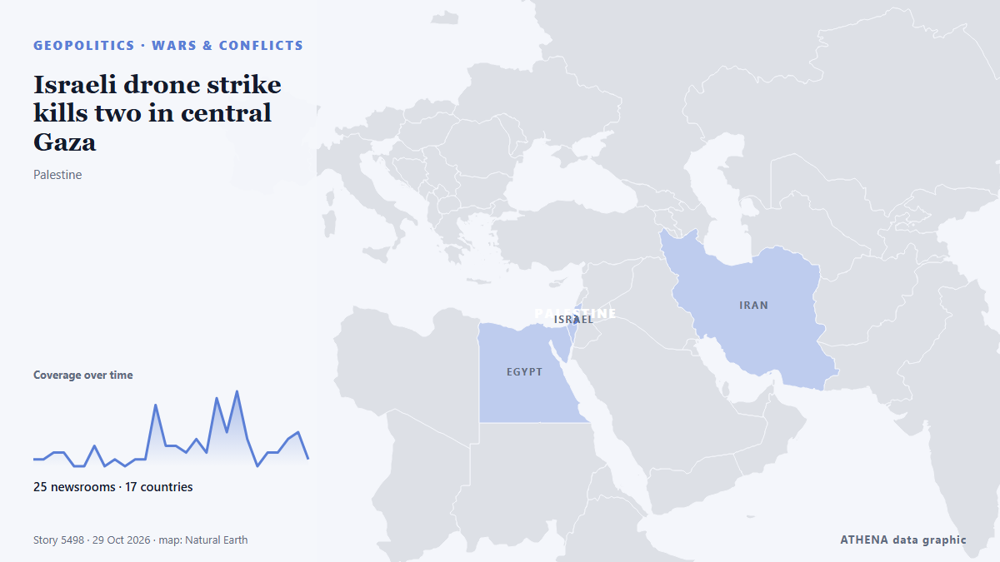

Israeli drone strike kills two in central Gaza

Several people wounded in Israeli strike on tent sheltering displaced Gazans, Wafa reports Several displaced Gazans were injuries on Thursday evening following an Israeli strike west of Gaza City… de Middle East Eye
Relayé de façon indépendante par 25 médias dans 17 pays depuis le 16 oct. ; premier à l'annoncer : Middle East Eye ; la couverture faiblit. ATHENA juge le risque élevé (6.5/10), surtout en raison de la gravité des dommages décrits et de sa portée géographique et sectorielle. La confiance est de 90 % (élevée) : 25 médias indépendants le confirment, avec une fiabilité moyenne des sources de 77 %. Médias par pays : Turquie (3), Qatar (3), Iran (3). Couverture : du 16 oct. au 25 oct., 227 heures.
Pourquoi c'est important: Ce suivi couvre le conflit qui concerne Israël, Gaza, la Cisjordanie et le Liban — faits militaires, situation humanitaire et diplomatie — tel que le couvre la presse du monde entier.
Ce qui a changé : 7 nouveaux articles de 4 rédactions dans les 24 heures jusqu'au 29 oct..
Premier titre : Israeli drone strikes kill one Palestinian and wound 13 in Gaza
Les titres sont affichés en anglais, tels que publiés.
En un coup d'œil
Sélectionné, noté et rédigé par la méthodologie publiée d'ATHENA. Aucun rédacteur n'intervient sur un événement en particulier. Comment il est produit ›
| 16 Oct 04:43 UTC | 1 |
|---|---|
| 16 Oct 16:43 UTC | 1 |
| 17 Oct 04:43 UTC | 2 |
| 17 Oct 16:43 UTC | 2 |
| 18 Oct 04:43 UTC | 0 |
| 18 Oct 16:43 UTC | 0 |
| 19 Oct 04:43 UTC | 3 |
| 19 Oct 16:43 UTC | 0 |
| 20 Oct 04:43 UTC | 1 |
| 20 Oct 16:43 UTC | 0 |
| 21 Oct 04:43 UTC | 1 |
| 21 Oct 16:43 UTC | 1 |
| 22 Oct 04:43 UTC | 9 |
| 22 Oct 16:43 UTC | 3 |
| 23 Oct 04:43 UTC | 3 |
| 23 Oct 16:43 UTC | 2 |
| 24 Oct 04:43 UTC | 4 |
| 24 Oct 16:43 UTC | 2 |
| 25 Oct 04:43 UTC | 10 |
| 25 Oct 16:43 UTC | 5 |
| 26 Oct 04:43 UTC | 11 |
| 26 Oct 16:43 UTC | 4 |
| 27 Oct 04:43 UTC | 0 |
| 27 Oct 16:43 UTC | 2 |
| 28 Oct 04:43 UTC | 2 |
| 28 Oct 16:43 UTC | 4 |
| 29 Oct 04:43 UTC | 5 |
| 29 Oct 16:43 UTC | 1 |
| 17 Oct 11:28 UTC | 4.5 |
|---|---|
| 17 Oct 11:31 UTC | 5.3 |
| 17 Oct 13:59 UTC | 4.5 |
| 17 Oct 21:06 UTC | 5.9 |
| 22 Oct 07:04 UTC | 6.1 |
| 26 Oct 07:22 UTC | 6.4 |
| 26 Oct 14:35 UTC | 6.8 |
| 29 Oct 21:50 UTC | 6.6 |
| 29 Oct 21:50 UTC | 6.5 |
Pourquoi ces chiffres
Importance
Risque
Confiance
La couverture : qui l'a annoncé, et quand
titre tel que publié · ouvre l'original- Middle East Eye · INTSeveral people wounded in Israeli strike on tent sheltering displaced Gazans, Wafa reports
- Middle East Eye · INTIsraeli fire kills at least three Palestinians across Gaza
- Anadolu Agency (English) · Turquie1 Palestinian killed, others injured in Israeli drone strike in Gaza
- Middle East Eye · INTFive Palestinians killed by Israel in Gaza
- Al Jazeera English · QatarIsraeli drone attacks kill six Palestinians across Gaza despite ‘ceasefire’
- Middle East Eye · INTSix Palestinians killed in Israeli strikes across Gaza in a day
- Middle East Eye · INTGaza death toll rises after five Palestinians killed in last 24 hours
- Middle East Eye · INTIsraeli strike on Gaza City kills one Palestinian and wounds others
- Middle East Eye · INTIsraeli drone strike kills one, wounds several in Gaza, hospital says
- Asharq Al-Awsat (English) · Arabie saouditeIsraeli Fire Kills Four People in Gaza, Medics Say
- IRNA (English) · IranPalestinian Resistance Committees commander killed in Israeli attack on Khan Younis
- Middle East Eye · INTSeven killed in Israeli attacks on Gaza in past 24 hours
- Mehr News (English) · IranIsraeli attacks injure five Palestinians in southern Gaza
- Middle East Eye · INTIsraeli attack on vehicle in Gaza City kills two
- Middle East Eye · INTIsrael kills four Palestinians in last 24 hours, including teenage girl
- The Straits Times · SingapourIsraeli fire kills four people in Gaza, medics say
- Al-Monitor · États-UnisIsraeli fire kills four people in Gaza, medics say
- Mehr News (English) · IranDeath toll from Israeli attacks on Gaza reaches 74,498
- Asharq Al-Awsat (English) · Arabie saouditeIsraeli Fire Kills Three People in Gaza
- Al Jazeera English · QatarIsraeli attacks kill four as famine risk looms in Gaza
- Middle East Eye · INTIsraeli drone strikes kill one Palestinian and wound 13 in Gaza
- Xinhua (English) — page reader · Chine4 Palestinians killed by Israeli fire in Gaza Strip: sources
- Middle East Eye · INTReport: UN to end Gaza entry coordination as Israel arrests returnees
- Middle East Eye · INTWatch: Palestinian killed in Israeli strike on vehicle in Gaza City
- Anadolu Agency (English) · Turquie1 Palestinian killed, others injured in fresh Israeli attack on Gaza
- Middle East Eye · INTIsraeli drone strike kills two Palestinians in Gaza City
- Oman Observer · OmanIsraeli fire kills four people in Gaza, medics say
- Colombia One · ColombieColombia’s Experience Could Help Locate More Than 10,000 Missing People in Gaza
- Middle East Eye · INTIsraeli air strikes in Gaza City kill two Palestinians, wound several
- Anadolu Agency (English) · Turquie2 Palestinians, including woman, killed in latest Israeli violations of Gaza ceasefire
- Middle East Eye · INTIsraeli gunfire kills Palestinian woman in Gaza
- The New Arab · INTIsraeli bombing cuts off water to large parts of Gaza City
- Middle East Eye · INTIsraeli gunfire kills Palestinian man in central Gaza
- Business Recorder · PakistanGaza after the ceasefire
- The Guardian · Royaume-Uni‘Gaza’s suffering has become campaign fodder’: Palestinians fear the worst from Israel election
- Oman Observer · OmanIsraeli strike on Gaza university kills three
- Middle East Eye · INTIsraeli attacks kill at least five Palestinians in Gaza
- Dawn · PakistanIsraeli strike on Gaza university kills 3; another 4 Palestinians killed in other attacks
- Haaretz (English) · IsraëlReports: Israeli strikes kill eight, including child, in Gaza Strip
- Al Jazeera English · QatarEight killed in Gaza as Israel targets university campus and other sites